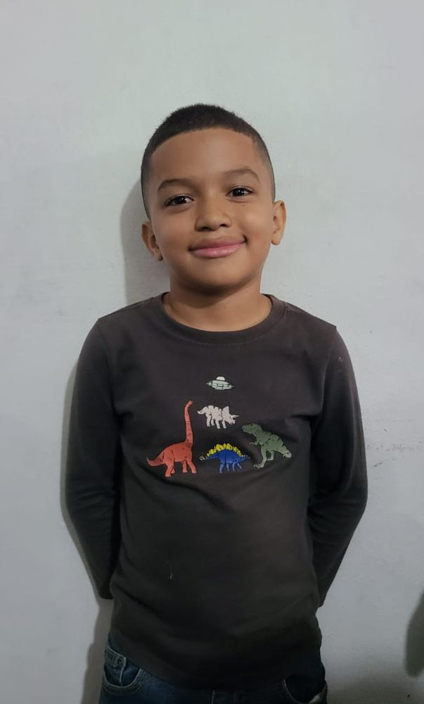
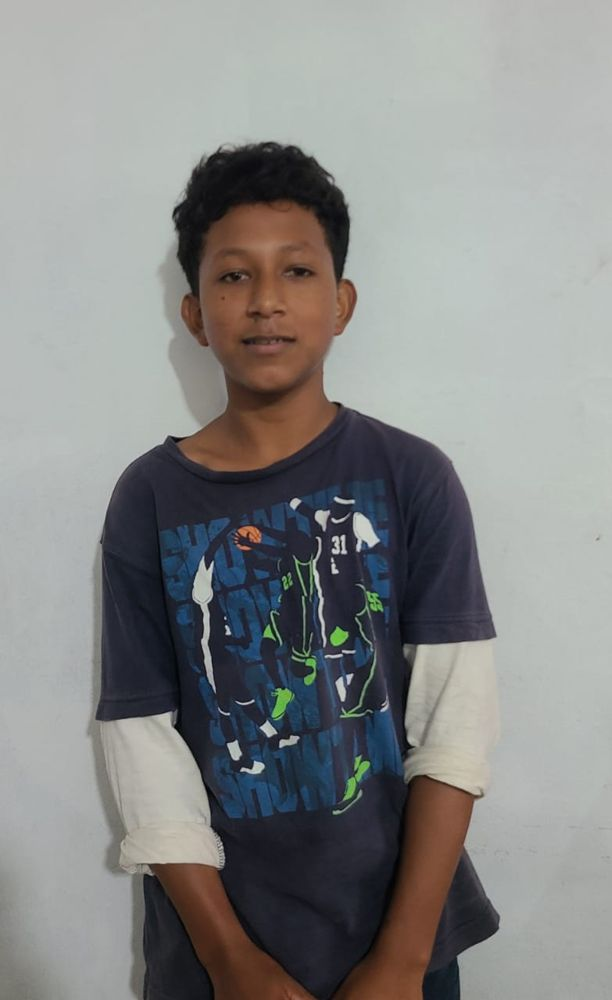
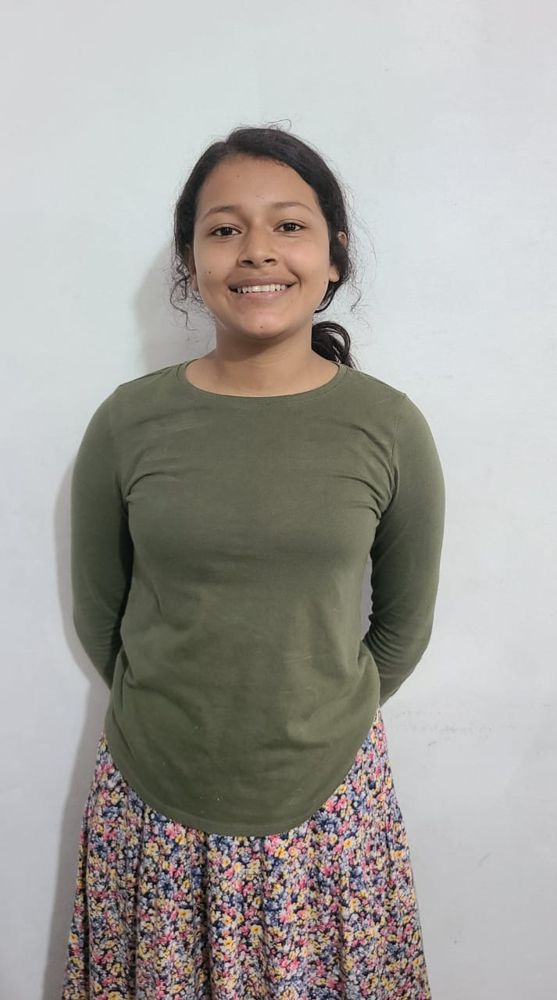
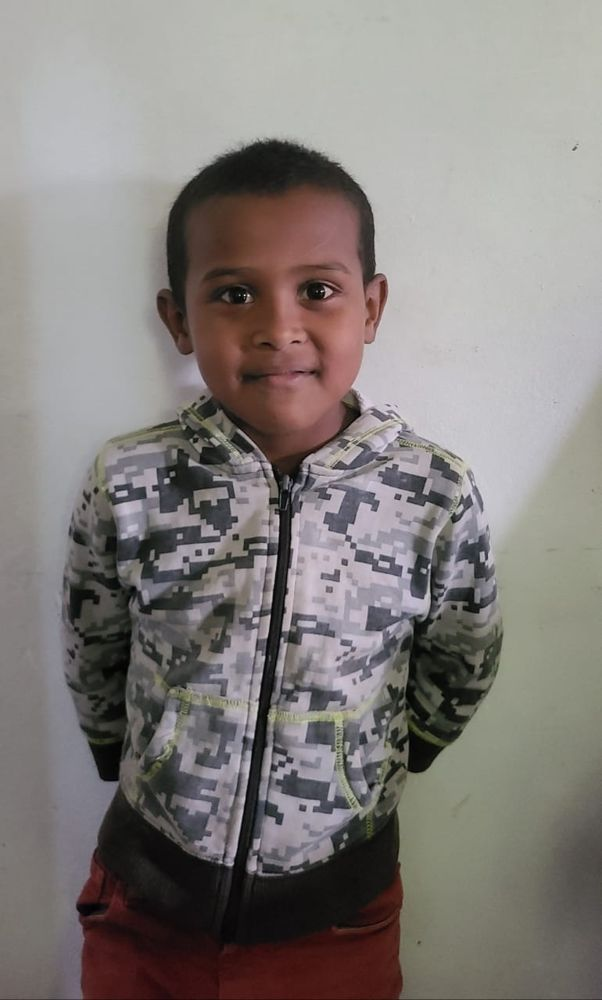
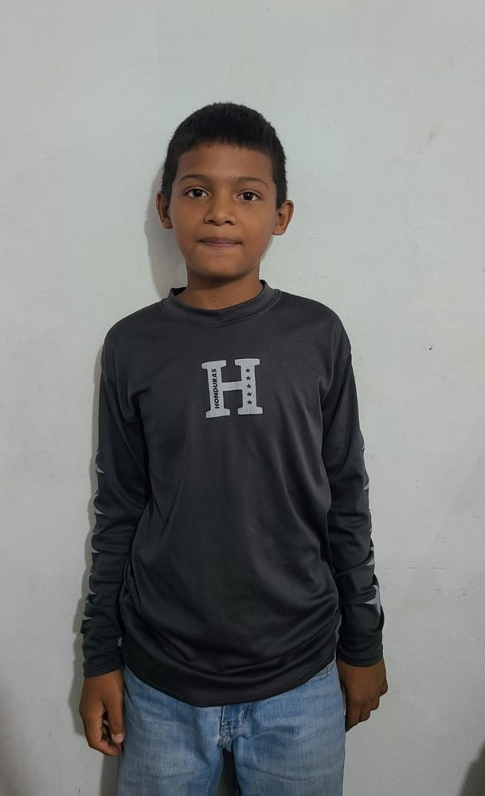
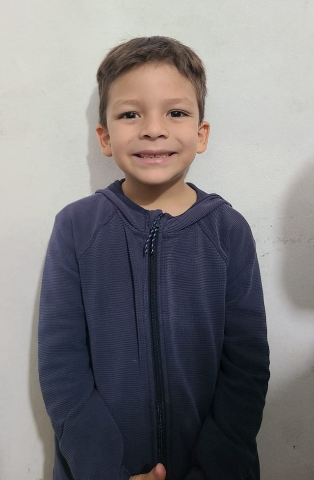
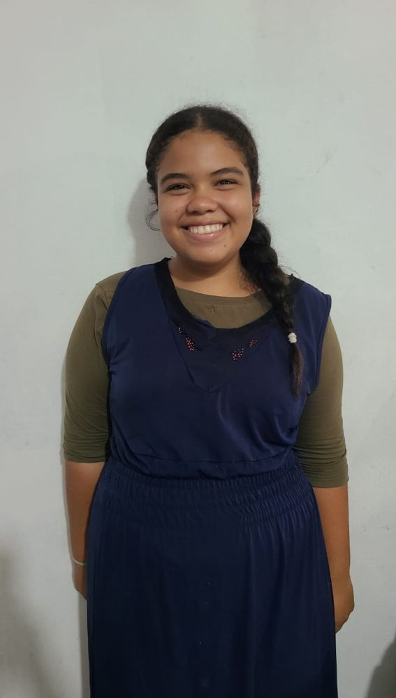
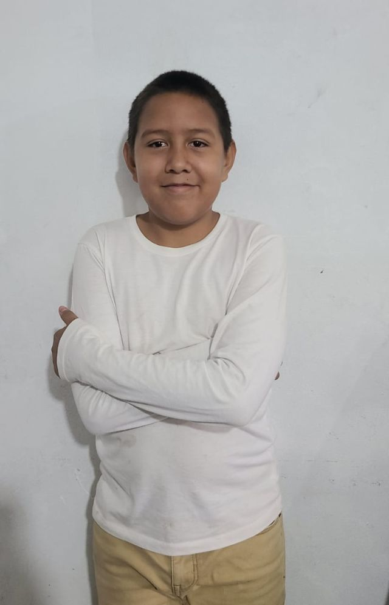
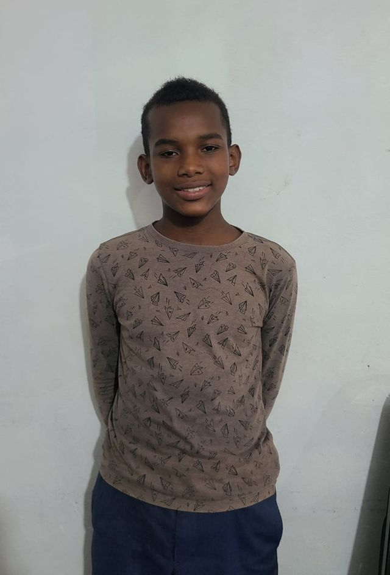
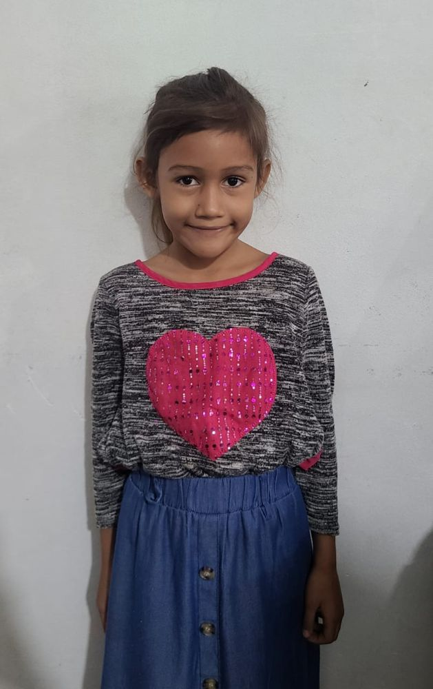

Putting the Word in a father’s hands.
Concise, practical and Gospel-centered teaching, built for real life in the home and the church. This part of the work we do ourselves.
Biblical discipleship
Verse-by-verse teaching that turns Scripture into daily obedience and lasting change.
Leadership training
Equipping men to lead their families and churches with integrity and courage.
Schooling
Taught alongside the mission workers, starting with the most important Book of all.
Family discipleship
Teaching fathers to lead prayer and the Word inside their own homes.
The school in La Ceiba.










How a father is taught
Identify
Find the men who are willing.
Teach
Open the Word with them, week after week, for as long as it takes.
Equip
Put the tools in their hands.
Multiply
They teach the next man. And their own children.